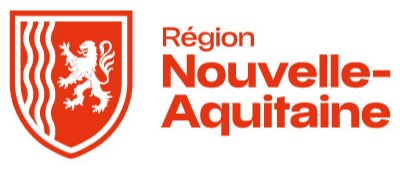

Individualiser les parcours
Les outils LMS existants sont centrés sur les contenus plutôt que sur l'apprenant.


Projet cofinancé par l'Union européenne
Appuyer sur n'importe quelle touche pour lancer la présentation
Des contenus et des modalités de formation adaptés aux besoins, aux envies et au profil de chacun, pour développer ses compétences en restant motivé et engagé.
Les outils LMS existants sont centrés sur les contenus plutôt que sur l'apprenant.
Les publics fragilisés décrochent davantage en formation à distance, depuis la pandémie.
Les apprenants attendent plus d'autonomie que ce que les outils disponibles leur offrent.
Plutôt que de connecter des outils disparates pour collecter de la donnée, créer le contenant qui produit les données à analyser.
S5 · Clôture
Snapshots datés des commits
Le projet continue d'évoluer →
Analyser le marché, écouter les utilisateurs, puis construire.
Interface, API, données, livraison : chaque couche pose les bases de la plateforme.
Ce prototype a démontré le potentiel de la solution.
Une plateforme robuste, évolutive et intégrant des modules d'intelligence artificielle.
De l'organisme de formation aux activités, chaque niveau s'emboîte dans le suivant.
Cliquez un niveau pour le détailler
Une page bien structurée rend le contenu accessible.
| Section | Rôle |
|---|---|
| En-tête | Titre et navigation |
| Principal | Contenu de la page |
<main> <h1>Construire sa première page</h1> </main>
Il aide dans la tâche en cours et fait des recommandations intelligentes.
Le HTML décrit le sens et l'organisation du contenu.
La balise <main> contient le contenu principal de la page.
<header> Navigation </header> <main> Votre contenu </main> <footer> Informations </footer>
Une évaluation initiale avant un module, ou un quiz d'auto-évaluation pour s'entraîner.
Associations correctes
Ordre correct
Détail des réponses
bonnes réponses
Apprenant · réponse textuelle
Une page se découpe en trois zones : l'en-tête avec le menu, la zone principale avec le contenu, puis le pied de page. Chaque balise indique son rôle au navigateur.
Fichiers
maquette-accueil.pdfTotal : 12/15
Commentaire
Bonne structure. Pensez à décrire les images pour les lecteurs d'écran.
Note enregistrée
S4 · Scène 5 / 8
Animation et messages à venir · Voir en démo : lxp.dev.step.eco
S4 · Scène 6 / 8
Animation et messages à venir · Voir en démo : lxp.dev.step.eco
S4 · Scène 7 / 8
Animation et messages à venir · Voir en démo : lxp.dev.step.eco
S4 · Scène 8 / 8
Animation et messages à venir · Voir en démo : lxp.dev.step.eco